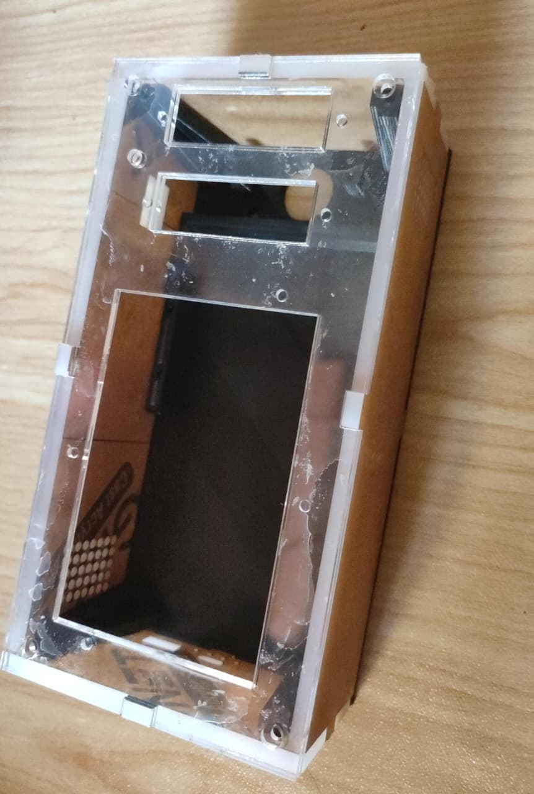
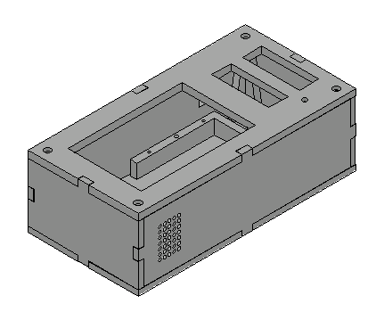
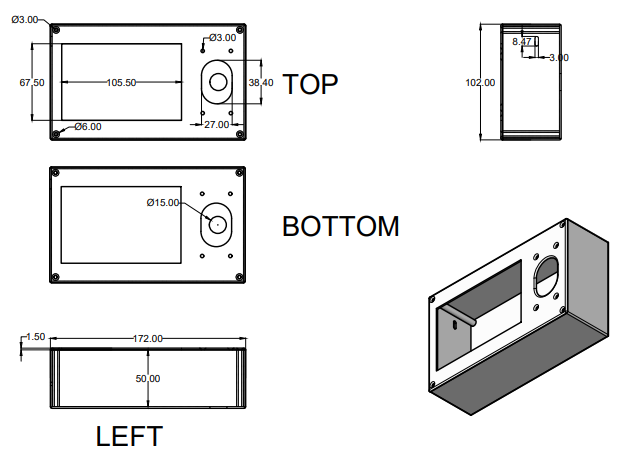
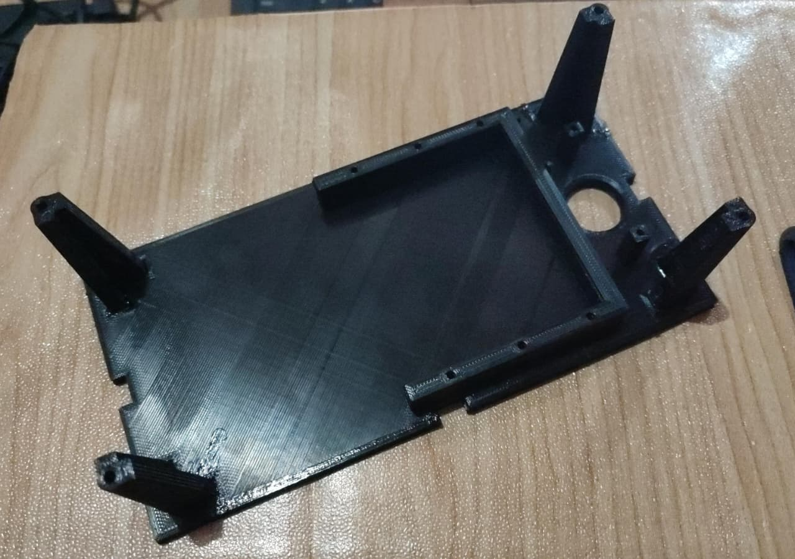
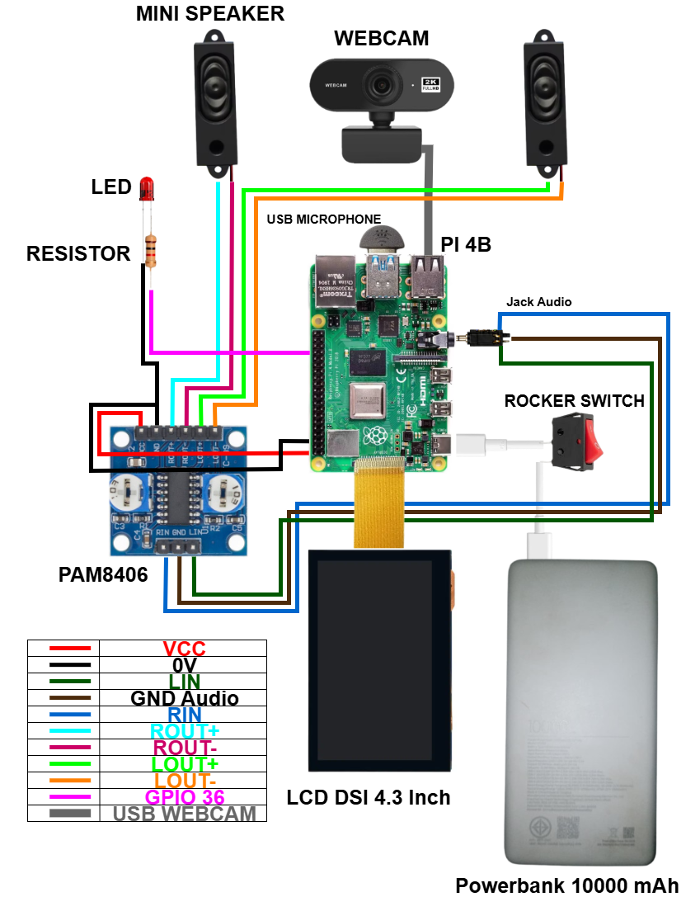

Alat Komunikasi Dua Arah Untuk Tuna Rungu Berbasis Raspberry Pi 4
A portable Raspberry Pi 4 system designed to support communication between Deaf and hearing users through gesture recognition, audio, and visual output.

01 / CASE STUDYThe system
The team developed a portable communication device combining a webcam, display, microphone, speakers, and gesture-recognition software. The system covered 125 SIBI/BISINDO gestures plus an IDLE state.
The project required a physical arrangement that could hold the electronics and still allow the camera, display, audio, and wiring to work together.
02 / CASE STUDYMy contribution
- Assembled and integrated the Raspberry Pi 4 hardware and its connected modules.
- Designed the enclosure for 3D printing and arranged component placement, wiring, and fit.
- Supported physical prototype assembly and device testing.
03 / CASE STUDYTested result
The team tested the physical device across 625 gesture attempts. It returned 414 correct results, equivalent to 66.24% accuracy, with a 3.91-second average response time per attempt.
These are team-level system results. My documented contribution was the hardware integration and enclosure work; the recognition model was developed as part of the wider team project.
Build evidence



